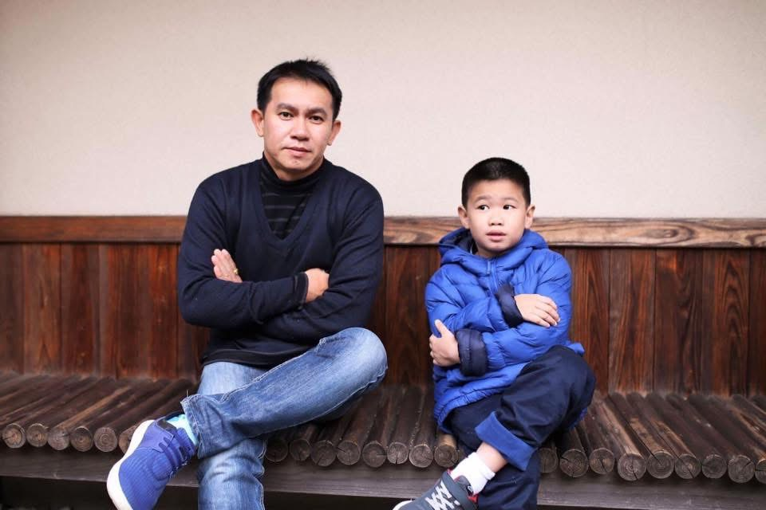

💛วันพ่อแห่งชาติ💛
สิ่งที่อยากบอกพ่อ
ขอบคุณพ่อสำหรับทุกอย่างที่พ่อทำให้เสมอ ขอบคุณที่พ่อคอยดูแล ห่วงใย และเป็นกำลังใจให้มาตลอด แม้บางครั้งพ่ออาจไม่ได้พูดอะไรมาก แต่หนู/ผมรับรู้ได้ถึงความรักและความตั้งใจดีของพ่อเสมอ ขอบคุณที่พ่อทุ่มเทและเสียสละเพื่อครอบครัว หนู/ผมภูมิใจที่ได้เกิดมาเป็นลูกของพ่อ และจะจดจำทุกสิ่งที่พ่อทำให้ด้วยความขอบคุณจากใจจริง
